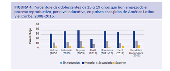

Origen de los embarazos adolescentes
El embarazo adolescente o embarazo precoz es aquel que se produce en una mujer adolescente, entre la adolescencia inicial o pubertad —comienzo de la edad fértil— y el final de la adolescencia. La Organización Mundial de la Salud define la adolescencia entre los 10 y los 19 años. El término también se refiere a las mujeres embarazadas que no han alcanzado la mayoría de edad jurídica.Cada año se registran unos 21 millones de embarazos de adolescentes entre 15 y 19 años. De estos embarazos, el 50% son no deseados y, por lo tanto, se estima una cifra de 12 millones de nacimientos.
A escala mundial, la tasa de nacimientos en la adolescencia ha disminuido de 64,5 nacimientos por cada 1000 adolescentes en 2000 a 41,3 nacimientos por cada 1000 mujeres en 2023. Sin embargo, las tasas de cambio han sido desiguales en diferentes regiones del mundo. Asia Meridional ha conseguido disminuir la tasa en todas las regiones, mientras que África Subsahariana y América Latina y el Caribe continúan teniendo las tasas más altas a nivel mundial.
Aunque desde 1990, la situación ha mejorado, aún queda un largo camino por recorrer, pues el embarazo adolescente es una de las principales causas de mortalidad entre las niñas de 15 y 19 años, según alerta la OMS.
Cada día los derechos de las mujeres y las niñas son vulnerados. Aunque representan la mitad de la población mundial y, por tanto, la mitad de su potencial, la desigualdad de género persiste. Los embarazos adolescentes son una de las múltiples caras que adopta esta desigualdad. Pero, ¿qué es un embarazo precoz?
El embarazo en la adolescencia o embrazo precoz es un fenómeno mundial con graves consecuencias para la salud, la sociedad y la economía. Se produce cuando ni el cuerpo ni la mente de la mujer están preparados para ello, concretamente entre la adolescencia inicial o pubertad (comienzo de la edad fértil) y el final de la adolescencia, que la OMS la establece en los 19 años. La mayoría de embarazos adolescentes no son deseados o planificados y el riesgo de morir por causas relacionadas al embarazo, parto y postparto se duplica si las niñas se quedan embarazadas antes de los 15 años.
- Los embarazos adolescentes en el mundo
- Los embarazos adolescentes en Bolivia

Cada año se registran unos 21 millones de embarazos de adolescentes entre 15 y 19 años. De estos embarazos, el 50% son no deseados y, por lo tanto, se estima una cifra de 12 millones de nacimientos. A escala mundial, la tasa de nacimientos en la adolescencia ha disminuido de 64,5 nacimientos por cada 1000 adolescentes en 2000 a 41,3 nacimientos por cada 1000 mujeres en 2023. Sin embargo, las tasas de cambio han sido desiguales en diferentes regiones del mundo. Asia Meridional ha conseguido disminuir la tasa en todas las regiones, mientras que África Subsahariana y América Latina y el Caribe continúan teniendo las tasas más altas a nivel mundial. Aunque desde 1990, la situación ha mejorado, aún queda un largo camino por recorrer, pues el embarazo adolescente es una de las principales causas de mortalidad entre las niñas de 15 y 19 años, según alerta la OMS.
Las violaciones de derechos no solamente afectan a las mujeres adultas, sino también a las niñas y adolescentes que incluso presentan mayores riesgos de vulnerabilidad por su dependencia a la familia y a personas mayores de manera general.
El Ministerio de Salud reporta en 2023 más de 35 000 embarazos en niñas y adolescente entre 10 y 19 años en el país. Eso significa que alrededor de 96 menores de edad se embarazan cada día. De este dato global, 2.119 casos son a menores de 15 años. Aunque el dato es muy alarmante, hay que tomar en cuenta que estos embarazos en menores están disminuyendo año tras año, ya que en 2013 alcanzaron los 90 000 casos (Ministerio de Salud). Muchos casos de violación no son reportados por la presión familiar o por la falta de conocimiento de las instancias de denuncia o la falta de acceso.
Se confirmó que la mayoría de estas jóvenes en situación de calle han vivido situaciones de violencia, incluso violencia sexual. Las principales causas de embarazo en las mujeres menores son al 37% por el consumo de alcohol, al 24% por violación, al 20% por deseo de experimentación, y al 12% para formar un hogar joven. No se sabe exactamente cuantas jóvenes están viviendo en la calle, pero se puede determinar los factores que las han llevado en salir a la calle. El principal factor es la violencia en los hogares que vivían, especialmente la violencia sexual por un familiar. Una vez en la calle, los jóvenes tienen una vida desordenada, en total libertad, pero siendo muy vulnerables a la inseguridad. Varias mujeres entrevistadas en el estudio llegaron en la calle antes de los 12 años, e iniciaron su sexualidad a los 11-13 años.